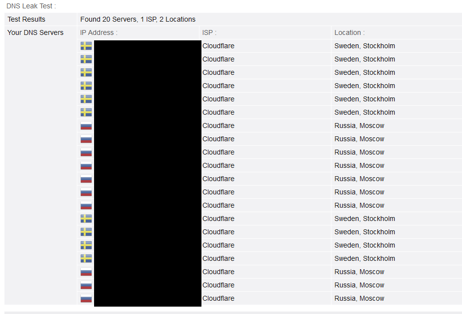

При включении настроек Strict routing + fake DNS в настройках TUN nekoray невероятно сильно урезается скорость загрузки видео на ютубе (не настолько ужасно, как без впн/прокси вовсе, но всё равно очень неприятно) при том, что скорость скачивания с других ресурсов и скорость, показываемая в спидтесте, очень высока. Отключать эти 2 настройки категорически не хочу, поскольку без них мой реальный DNS начинает светиться на любом тесте DNS leak, что совсем не есть хорошо, если случится тотальный чебурнет. Есть ли какой-то вариант пофиксить проблему, при этом сохранив полное сокрытие исходного DNS?
Выключи fakeip и пропиши в сетевом адаптере винды 1.1.1.1 (или любой другой кроме роутера)
И что принципиально изменится? Вместо провайдеровских ДНС, по которым меня можно отследить, будут светиться клаудфлейровские однёрки, по которым меня тоже можно отследить, потому что подключение к этому днс будет идти не через хост, а через мою тачку при отключении fake dns.
Даже кринжесофт типа Proxifier для socks5 проксей может в нормальную блокировку non A/AAAA запросов, замену ДНС, при который и ютуб работает + опознает меня так, будто я из той страны, где стоит хост, и днс на разных тестах не палится, но что-то подсказывает, что всяким простым htttps и socks проксям конец придёт, поэтому уже задумываюсь о том, как нормально шифроваться через полноценные, а не временные решения.
С выставлением клаудовских днс в настройках адаптера всё еще прекрасно палит, что я из России

- Включи встроенный в браузер DoH
- Попробуй решения вот отсюда:
VPN DNS Leak when using OpenVPN on WIndows 10 (December 2019) - Specifically with Private Internet Access - Super User - Если я правильно понимаю, ты юзаешь неко в режиме TUN. В таком случае можно еще попробовать не самый удобный способ - установить в осноном интерфейсе днс 127.0.0.1, но в таком случае, при отключении TUN неко у тебя будет полностью отваливаться весь интернет
не будет использоваться маршрут 192.168.1.0/24 который активен даже при strict route
я на 3х компах проверял, что при strict route и ручном указании 1.1.1.1 в адаптере, днс запросы перестают ходить напрямую, может у тебя через ipv6 утечка, удали днс из ipv6 адаптера даже если нет ipv6 от провайдера
У меня откручен ipv6 и на печке и на хосте в принципе под 0
в wireshark в wan адаптере посмотри действительно ли запросы утекают, фильтр простейший: dns
Помогло, трушные днс не улетают, ютуб не тормозит. Спасибо.
Что интересно, на линуксе и андройде таких проблем с днс ликом нет, они есть только на винде. Валдикс об этом писал еще 2015 году в своей статье на хабре:
Как вы уже можете знать, резолвер DNS в Windows 10 отправляет DNS-запросы на все интерфейсы параллельно, что часто бывает либо просто неудобно, когда используется так называемый Split Tunneling и DNS внутри VPN-туннеля отдает внутренние адреса для внутренних ресурсов, а Windows не может понять, что к чему, либо и вовсе создает угрозу безопасности, как в случае утечки DNS через публичный Wi-Fi
Для исключения утечки можно поставить dnscrypt-proxy, во всех сетевых интерфейсах вписать 127.0.0.1. dnscrypt сказать слушать tun nekoray и отключить udp резолверы.
А у вас на телефоне не тормозит? не проверяли?
У меня на Windows , виртуалньые машины с Ubunbtu идеально работают, а на телефоне android через приложение как будто первые инициализации по секунды 3-5. Листать шорты не возможно.
Пробовал и с DNS remote , и с dns local . Не знаю от чего зависит.
не проверял
Может быть это?
может это и помогает, но выглядит как костыль и баг получается и им надо поставить bug request.
И отключаение route only - это плохая затея т.к. IP при вашем запросе на выходе заменяется на Domain. Это вносит путаницу для сервисов которые раскиданы по миру и имеют свои сети CDN.
Тоже была идея, что это баг (т.к. в какой-то из предыдущих версий такого не было).
А так да, по сути это действительно костыль, которого по-хорошему быть не должно, но пока что так, без него загрузка видео просто мучительна 
Upd. Похоже что на гитхабе с этой проблемой знакомы, там советуют отключить Sniffing QUIC трафика, правда Bug Report так и не создали.
И какое тогда финальное и самое адекватное решение?
На данный момент
- либо отключать Route Only (лично у меня работает)
- либо отключать QUIC в Sniffing’е, но оставлять Route Only включённым (не проверял, но кому-то помогает)
- либо откатываться на старую версию, где таких проблем нет (например на 3x-ui v2.0.2 и xray core v1.8.6)
Сегодня вышел релиз 4.0.1. Установил его на Линуховой машине и увидел, что течёт локальный днс. Как только не настраивал, ничего не удаётся изменить. В качестве альтернативы в настройках сабжа для “прямых” днс указаны китайские днс-серверы, чего совсем уже делать не хочется. Видимо разработчика совсем прижали китайские товарищи из соответствующих служб. Похоже, пора менять сабж на что-то другое. На старых версиях сидеть тоже не дело.
NekoRay от Mahdi-zarei никто не пробовал?
Пробовал, разницы с последней на тот момент беткой (4.0 beta 4) особо не заметил, кроме, разве что, замороченной настройки правил.
Да, не хотелось бы это усложнять
А про hiddify кто-нибудь что хорошего скажет?
Чем плохи старые версии ?
В новых версиях обычно устраняются найденные ошибки и уязвимости. В старых естественно этого нет.
Вроде пользуются, не жалуются. Свои функции выполняет.
Правда в последнем билде тоже крыша протекла, судя по отзывам.